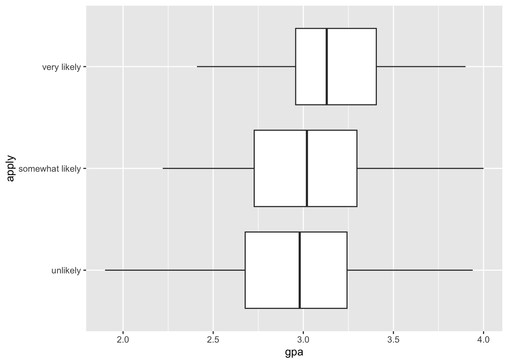
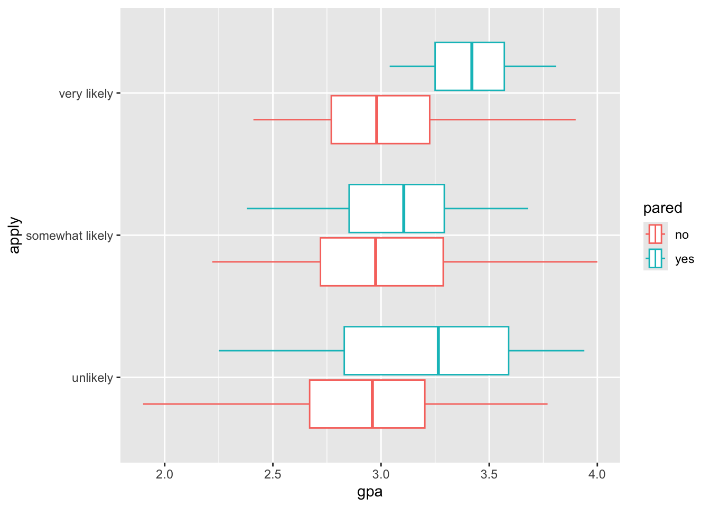
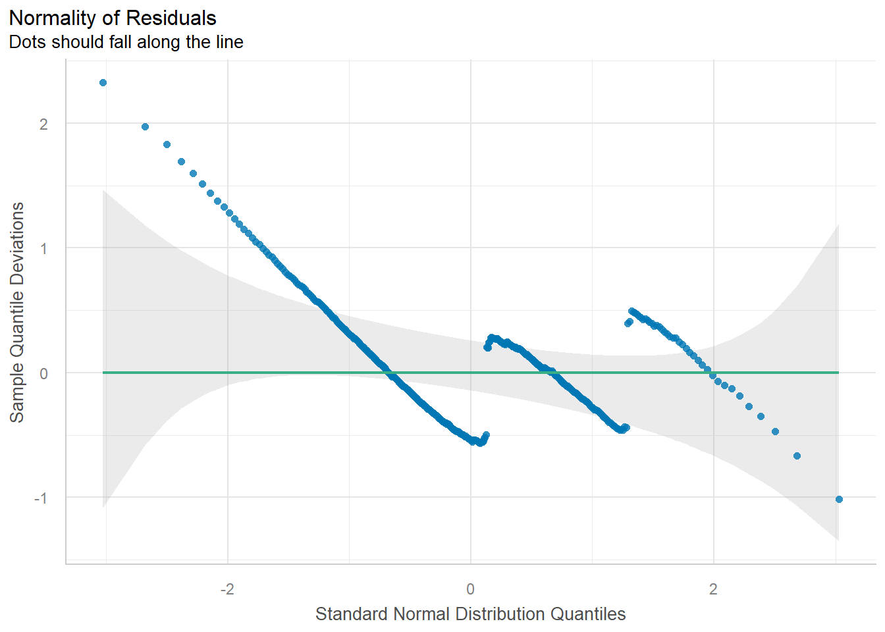

Ordered and discrete outcome variables are common responses to many designs, especially in psychology. A ubiquitous case of ordinal variables are Likert scales; for example, when responses are an ordered range of categories like “strongly agree”, “agree”, “neutral”, “disagree”, or “strongly disagree”. The choice of a cumulative model is fitting for Likert-item data sets which “ordered verbal (or numerical) labels are used to obtain discrete responses about a continuous psychological variable”. In addition to being ordered, it is unclear if the psychological distance between each response category is equivalent across all categories or whether if the distance between categories are the same across participants. It is also the case that the assumptions of linear models are violated because this kind of outcome variable cannot be assumed to be continuous or normally distributed (Bürkner & Vuorre, 2019).
Ordinal regression is then a way to model these ordered and discrete outcomes as a generalized linear model with a link function. For this chapter, we will focus on a class of ordinal variable modeling called a cumulative probit model which uses the probit link function. This model transforms the ordered outcome variable into a continuous and normal latent (i.e., not observable) variable which makes it work with linear models.
6.2 Ordinal Outcomes with Probit Link Function
As aforementioned, the cumulative probit model assumes that a continuous and normally distributed latent variable \(\bar{Y}\) underlies the observed ordinal variable \(Y\). This continuous and normally distributed latent variable is divided into different areas separated by \(K\) thresholds, \(\tau_k\). Importantly, these thresholds may be the same or different distances from each other across this latent distribution. The number of thresholds is equal to the number of response levels of the ordinal variable, \(L\), minus 1, or \(K = L-1\).
[Insert image on continuous normal divided by K thresholds]
When we conceptualize the underlying latent variable with this distribution, we can model the probability of \(Y\) being equal to category \(k\) as
\[ Pr(Y = k) = \Phi(\tau_k) - \Phi(\tau_{-1}) \] Where \(\Phi\) is the normal cumulative distribution function. What’s important to realize is to obtain the probability of the response we care about \(\tau_k\), we are subtracting the probability of the previous threshold (\(\tau_{k-1}\)) from the probability of \(\tau_k\).
However, in order to relate this latent normal distribution \(\bar{Y}\) to a linear combination, we need to establish that
\[\bar{Y} = \eta + \epsilon\] Where, if for example we have two predictors,
\[ \eta = b_1x_1 + b_2x_2 \] Notice that in this formulation, there is no intercept in the predictor side as the thresholds take the place of the model’s intercept.
The relationship between our link function (\(\Phi\)) and our predictors (\(\eta\)) is the result of the assigning the probability of a given threshold (or response) given the predictors, such as
\[ Pr(Y = k|\eta) = \Phi(\tau_k - \eta) - \Phi(\tau_{k-1} - \eta) \] And when we expand this out (Tutz, 2000), our cumulative probit model with two predictors for the probability of a category \(k\) becomes
The data for this chapter is composed of college student profiles and responses to whether they would be applying to graduate school. With ordinal regression we will determine the relationship between predictor variables and the ordinal outcome variable of applying to graduate school. Since the outcome variable is three ordered categories from “very likely”, “somewhat likely”, and “unlikely”, we can use an cumulative logit model as a reasonable ordinal regression model here.
In addition to our usual packages (tidyverse, easystats, and ggeffects), we will also need to load the ordinal package in order to use a cumulative (link) model.
## Load packageslibrary(tidyverse)library(easystats)library(ggeffects)library(qqplotr)library(ordinal)## Read in data from filegradapp <-read_csv("gradapp.csv")gradapp
# A tibble: 400 × 4
apply pared public gpa
<chr> <chr> <chr> <dbl>
1 very likely no no 3.26
2 somewhat likely yes no 3.21
3 unlikely yes yes 3.94
4 somewhat likely no no 2.81
5 somewhat likely no no 2.53
6 unlikely no yes 2.59
7 somewhat likely no no 2.56
8 somewhat likely no no 2.73
9 unlikely no no 3
10 somewhat likely yes no 3.5
# ℹ 390 more rows
This data shows records for 400 college students.
Here’s a table of our variables in this dataset:
Variable
Description
Values
Measurement
apply
Response to Applying to Graduate School
Characters
Ordinal
pared
“Yes”/“No” if parent(s) had Graduate Education
Characters
Nominal
public
“Yes”/“No” if Currently Attending a Public University
Characters
Nominal
gpa
GPA of student
Double
Scale
6.5 Prepare Data / Exploratory Data Analysis
In order to use the apply variable in our analyses, we need to re-code this variable. First, we will use the factor() function to set the order levels/categories of our apply outcome variable to be used in a proper ordinal regression model. Notice that once we do this, the column label under apply changed from to , meaning it is now an ordinal variable.
## Prepare the data for ordinal modelgradapp$apply <-factor(gradapp$apply, levels =c("unlikely", "somewhat likely", "very likely"), #Must indicate orderordered =TRUE)gradapp #print
# A tibble: 400 × 4
apply pared public gpa
<ord> <chr> <chr> <dbl>
1 very likely no no 3.26
2 somewhat likely yes no 3.21
3 unlikely yes yes 3.94
4 somewhat likely no no 2.81
5 somewhat likely no no 2.53
6 unlikely no yes 2.59
7 somewhat likely no no 2.56
8 somewhat likely no no 2.73
9 unlikely no no 3
10 somewhat likely yes no 3.5
# ℹ 390 more rows
factor() and Ordering
The factor() function is useful for changing character values into discrete levels or categories, but it is necessary for our ordinal regression models that they are ordered by using both the “levels =” input argument and “ordered = TRUE” input argument. Specifically, if you do not assign the levels argument correctly, the factor() function will order the categories in alphabetical order it is likely the interpretation of the results will be incorrect.
Secondly, we will use the mutate() function from the dplyr package (which is a package that automatically loaded with tidyverse) to to add a new column to our data which re-codes “Unlikely” = 1 and “Somewhat Likely” = 2, and “Very Likely” = 3. We will use this column for our demonstration of incorrectly modeling an ordered variable as a continuous variable.
## Prepare the data for analysisgradapp2 <- gradapp |>mutate(gradapp_n =case_match( apply, "unlikely"~1,"somewhat likely"~2,"very likely"~3 ) )gradapp2 #print
# A tibble: 400 × 5
apply pared public gpa gradapp_n
<ord> <chr> <chr> <dbl> <dbl>
1 very likely no no 3.26 3
2 somewhat likely yes no 3.21 2
3 unlikely yes yes 3.94 1
4 somewhat likely no no 2.81 2
5 somewhat likely no no 2.53 2
6 unlikely no yes 2.59 1
7 somewhat likely no no 2.56 2
8 somewhat likely no no 2.73 2
9 unlikely no no 3 1
10 somewhat likely yes no 3.5 2
# ℹ 390 more rows
6.5.1 Visualizing Relationships
Let’s attempt to visualize the relationship between gpa and the apply outcome response using a boxplot.
## Explore gpa-apply relationship by parental graduate educationggplot(data = gradapp2, mapping =aes(x = gpa, y = apply)) +geom_boxplot()

Notice how the proportion of “very likely” responses appear from students who have a higher gpa. Whether a main effect of gpa is significant will depend on our model.
In addition, we can plot to see if this there is an interaction between a student’s gpa and whether their parent(s) attended gradute school.
## Explore gpa-apply relationship by parental graduate educationggplot(data = gradapp2, mapping =aes(x = gpa, y = apply, color = pared)) +geom_boxplot()

In this plot, we can see that within the “very likely” and “somewhat likely” there seems to be a relationship where if a student had a higher gpa and the parent attended graduate school, then the student is more likely to apply to graduate school. However, in the case of the “unlikely” category we see an opposite effect in that if the student had a higher gpa and the parents did attend graduate school, then they are more “unlikely” to apply to graduate school.
7 Models Without Interaction Terms
First, let’s take a look at the case for a cumulative link ordinal model with one dummy coded categorical predictor variable and one continuous predictor without any interaction term.
7.1 Less Correct: the General Linear Model
Before we fit the ordinal regression, it would be worthwhile to try fitting the less appropriate regular general linear model. We’ll use our old friend lm() to assess the relationship between the outcome variable apply_n with the predictor variables gpa and public. For more information on general linear modeling, we covered these topics in our Regression Recap chapter.
It is worth noting that while assuming an ordered and discrete variable as continuous is common in the literature, it is not recommended especially in the cases when there are few categories (as we will see here).
As the results show, we have a significant partial effect of gpa, such that a 1 unit increase in gpa increases the continous outcome value between “unlikely” (1) to “very likely” (3) by a small amount (0.25) while controlling for public. Our categorical predictor public is not significant. Although this corroborates our data visualization plots in that students with a higher gpa are more likely to apply to graduate school, this general linear model approach with lm() breaks model assumptions.
7.1.1 Checking Assumptions
When we fit a model, we always want to see if there were any violations in the assumptions. When using the general linear model via the lm() function, taking a look at a plot of the residuals, using check_residuals()1, should be concerning.
In addition, when we turned the outcome variable into a continuous variable, we cannot assume the errors are normally distributed.
check_normality(fitlm1) |>plot()

Both of these breaks in general linear model assumptions are a clear sign that parts of the model may not be trustworthy. Specifically, in this case of the non-uniformity of residuals, there is terrible violation to the model’s uncertainty estimates; therefore, while the predictions may be okay, we can (and should) do better.
So now we turn to our cumulative link ordinal model.
7.2 More Correct: the Generalized Linear Model
Now let’s compare our modeling of the same variables using a cumulative link ordinal regression model and its adherence to model assumptions.
“Is there a relationship between a student’s GPA, whether their attended university is public or private, and the log-odds of applying to graduate school?”
Again, because we have multiple predictors, multiple regression allows us to control for the effects of multiple predictors on the outcome, and we are left with the unique effect of a predictor when controlling for other predictors. In this case, the outcome variable will be apply, and the predictor variables will be public (categorical variable) and gpa (continuous variable).
We did a lot of work already with the lm() in the “Regression Recap”. The clm() function is in many ways the same as the lm() function. Even the syntax for how we write the equation is the same. In addition, we can use the same model_parameters() function to get our table of parameter estimates. While we have used the glm() function for most of the GLMs in our book, we need to use the clm() function (which is a part of the ordinal package) for our specific cumulative link ordinal regression model.
But notice that the clm() function has one more input argument. This input argument is the “data” input argument, which requires which “link function” to use. For our ordinal regression, we will supply the probit link function for our cumulative link ordinal regression model.
Uncertainty intervals (equal-tailed) and p-values (two-tailed) computed
using a Wald z-distribution approximation.
7.2.1 Paramter Table Interpretation (Log-odds)
Again, the parameter table output from a model fit with clm() looks very similar to parameter table outputs from models fit with lm(). But there is a big difference – in clm() models, we are no longer working in the same raw units!
This difference is apparent in the second column of the output table: “Log-Odds”. Although we didn’t use a logistic distribution to model the continuous variable, we are still given log-odd estimates with the probit link function.
Due to the nature of the dummy coded categorical variable pared, we will assess the parameters from each level of that variable first.
The intercept is the average log-odds of surviving for students who’s parent has not been to graduate schoool while accounting for the effect of gpa. In this case, female passengers who paid no fare have an average log odds of 0.65 indiciating that female passengers are more likely to survive than not survive.
Remember, with log-odds, a value of 0 means it is equally likely for an event to occur or not occur. Here, since the log-odds is greater than 0, it is more likely for the event that is labeled a “success” (in this case, more likely to survive) to happen than the event that is labeled a “failure”.
Male passengers have a 2.42 decrease in the log-odds of suriving relative to the female passengers while accounting for the effect of fare (i.e., they have a worse chance of surviving).
Notice how these comparisons are all in reference to the females. Again, this is due to the nature of the dummy coded categorical variable.
Because the intercept was significant, there was a significant difference between the estimate of female passengers and 0, \(p<0.001\). Because “sex[male]” was significant, the difference between female and male passengers was significant, \(p<0.001\).
Lastly, while controlling for the effect of sex, a one unit increase in fare was significantly related to a 0.01 increase in the log-odds of survival.
We now turn our attention to the continuous variable fare. If log-odds of fare is $ = 0.01$, then it is the case that we can say it is more likely for someone to survive the Titanic with an increase in fare paid.
This effect (fare) is also statistically significant from 0 (\(p<0.001\)).
check_residuals() requires the package qqplotr to be installed.↩︎